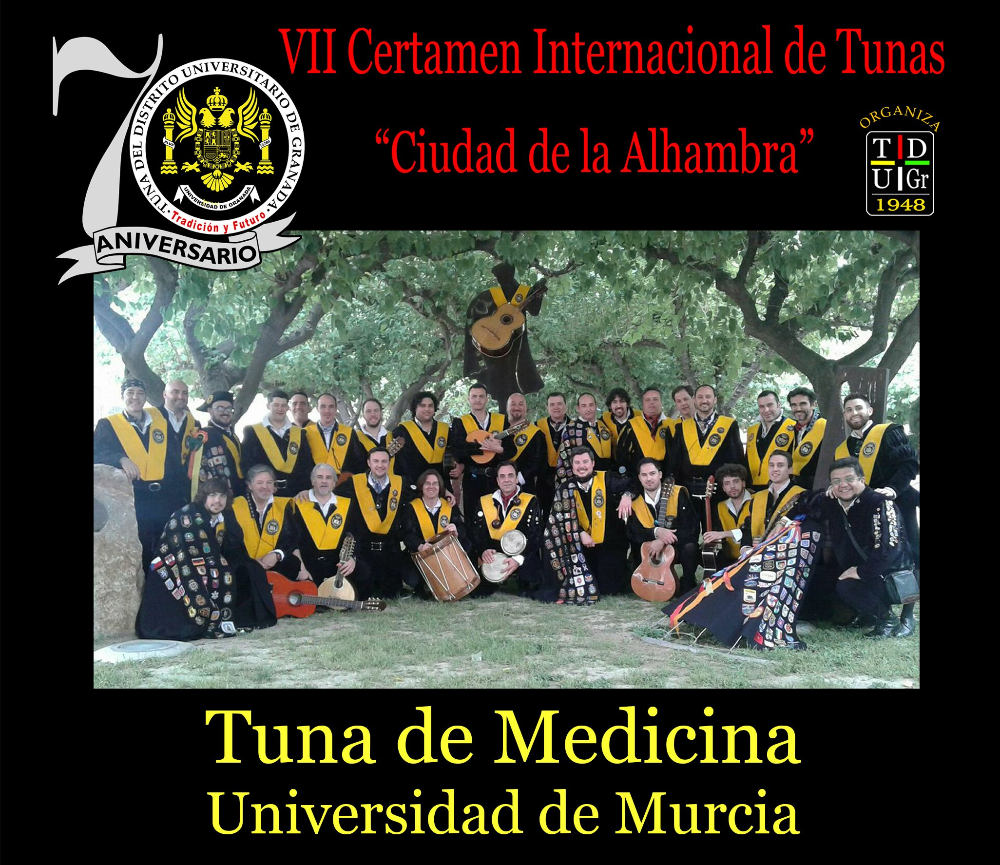
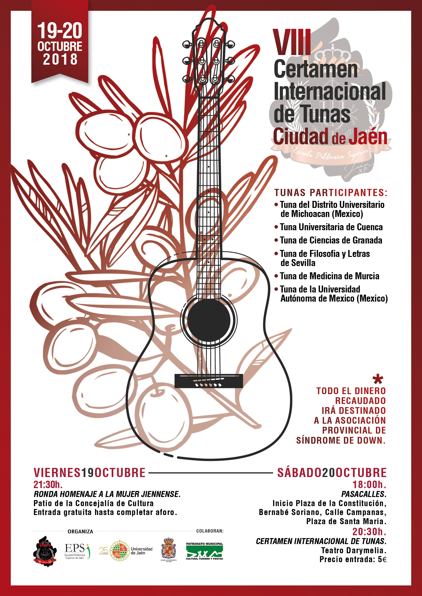

XXVII EDICION DEL CONCURSO DE VILLANCICOS DEL GRUPO DE COROS Y DANZAS VERDEROL DE ARCHENA
Un año más, nos hemos apuntado al Concurso de Villancicos del Grupo de Coros y Danzas Verderol, en Archena.
Fuimos los primeros en actuar de entre un gran número de variadas agrupaciones musicales que hicieron de toda la gala un espectáculo variado y sentido.
Nos hicimos con el "Primer Premio" tras interpretar dos bonitos villancicos en una actuación en la que disfrutamos muchísimo ya que el formato de la misma fue ligéramente diferente al usual en una actuación de Certamen.
Muchas gracias a este maravilloso pueblo y a su ayuntamiento, y que no dejen nunca de celebrar este emotivo concurso.
VII CERTAMEN INTERNACIONAL DE TUNAS CIUDAD DE LA ALHAMBRA (GRANADA)

Segunda visita a Granada en un mismo año, aunque para ser más precisos, diré que la vez anterior fue en Atarfe. Creo que ese hecho habla por sí solo de cuánto nos gusta esta ciudad, considerada como nuestra segunda casa.
Y no es de extrañar que visitemos tan a menudo esta maravillosa "Ciudad de la Alhambra", ya que precisamente estamos hermanados con la Tuna de Distrito de Granada.
Coincidiendo con su 70 Aniversario, dicha Tuna nos invita a concursar en la VII Edición de este Certamen, y como no, nosotros encantados.
Y es que da gusto pasear, ya sea de día o de noche, recorriendo la ciudad con sus calles repletas de alegría, disfrutando del tapeo, y la gente encantada con nosotros, acostumbrados a poner ese extra de música y alegría que siempre es
de tanto agradecer.
Ganamos el "Premio a Mejor Solista" en una actuación mágnifica en uno de los "Teatros" de la Facultad. Ya es todo un clásico dicho emplazamiento y el famoso péndulo gigante que parece recibirnos cada vez que actuamos en este Certamen.
Apenas hemos vuelto y ya tenemos ganas de volver. ¡Hasta pronto, Ciudad de la Alhambra!
VIII CERTAMEN INTERNACIONAL DE TUNAS CIUDAD DE JAEN

Ocho años sin volver a Jaén, nada menos. Queda lejos aquel 2010 cuando vinimos a la "Tierra del Olivo", y obtuvimos el "Premio a la Segunda Mejor Tuna" y el "Premio a Mejor Ronda".
Teníamos muchas ganas de volver, porque además del aliciente que supone siempre visitar esta hermosa ciudad, se suma el hecho de que están en feria, y ya se sabe, nadie como los andaluces para la fiesta.
También se agradece que los certámenes se celebren en Primavera o en Otoño, ya que la buena temperatura, sobre todo con algo de fresquito, nos encanta. Como es normal, el "fresco" es fácil de combatir gracias a la capa, además del gusto
de poder darle uso a la misma. En cambio, el calor, con nuestro traje, ya es harina de otro costal.
Bueno, que me enrollo, dos días espectaculares de certamen y de feria, donde conseguimos ganar el "Premio a la Mejor Tuna" y el "Premio al Mejor Bandera".
Así que todo un éxito, tanto por nuestra parte como por parte de la organización y de esta estupenda ciudad andaluza.